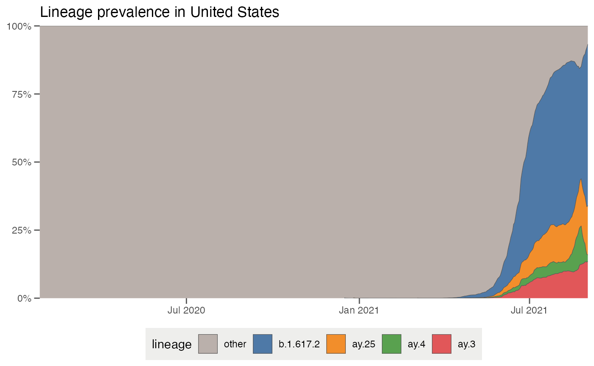
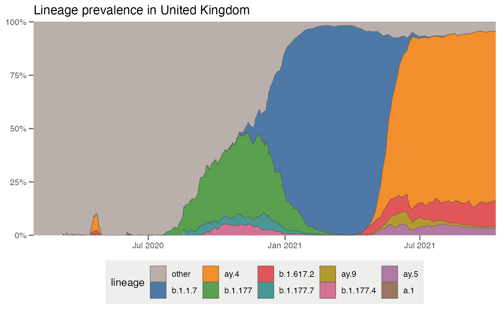
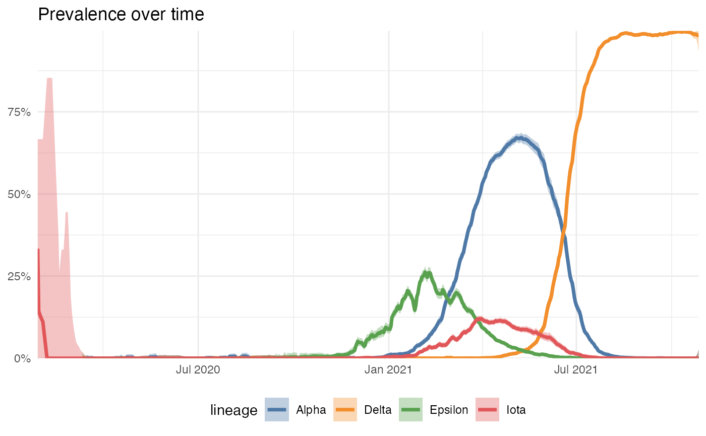

outbreak.info’s Location Tracker allows you to explore what lineages are currently circulating within a particular country, state/province, or U.S. county. These reports also allow you to compare the prevalence of variants within that location, including Variants of Concern. Here, we’ll show you how to pull the data from these reports and recreate the visualizations on the United States Variant Report.
Import the packages we’ll use and provide our GISAID credentials to access the data. If you don’t have a GISAID account, you can register for one on their website. It may take a day or two for the account to become active.
## Warning: replacing previous import 'jsonlite::flatten' by 'purrr::flatten' when
## loading 'outbreakinfo'
# Authenticate yourself using your GISAID credentials.
authenticateUser()To be able to discover which lineages are currently circulating around the U.S., let’s grab the prevalence of all the lineages in the U.S. over the past 60 days.
usa_60d = getAllLineagesByLocation(location = "United States", other_threshold = 0.03, nday_threshold = 5, ndays = 60)
# This ends up being a large data frame. Let's take a look at what's inside:
usa_60d %>% glimpse()## Rows: 1,408
## Columns: 6
## $ date <date> 2020-01-27, 2020-01-28, 2020-01-29, 2020-01-30, 20…
## $ total_count <int> 1, 2, 4, 0, 1, 0, 0, 0, 0, 0, 1, 0, 1, 0, 1, 1, 0, …
## $ lineage_count <int> 1, 2, 4, 0, 1, 0, 0, 0, 0, 0, 1, 0, 1, 0, 1, 1, 0, …
## $ lineage <chr> "other", "other", "other", "other", "other", "other…
## $ prevalence <dbl> 1, 1, 1, 0, 1, 0, 0, 0, 0, 0, 1, 0, 1, 0, 1, 1, 0, …
## $ prevalence_rolling <dbl> 1, 1, 1, 1, 1, 1, 1, 1, 1, 1, 1, 1, 1, 1, 1, 1, 1, …You can get explanations of each of the variables by looking at the data dictionary (outbreakinfo::genomicsDataDictionary()). Let’s look at how prevalent each of the different Pango lineages are in the U.S.:
usa_60d %>%
filter(lineage != "other") %>%
group_by(lineage) %>%
summarise(min_prevalence = min(prevalence_rolling),
max_prevalence = max(prevalence_rolling)) %>%
arrange(desc(max_prevalence)) %>%
kable()| lineage | min_prevalence | max_prevalence |
|---|---|---|
| b.1.617.2 | 0 | 0.5925803 |
| ay.25 | 0 | 0.1808546 |
| ay.4 | 0 | 0.1411850 |
| ay.3 | 0 | 0.1354753 |
That gives an idea of what the range of prevalences for the lineages are, but not how they have changed over time. It’s easier to see this temporal behavior with a streamgraph which plots the relative prevalence of all the lineages over time. plotAllLineagesByLocation replicates these plots on outbreak.info:
plotAllLineagesByLocation("United States", other_threshold = 0.03, nday_threshold = 5, ndays = 60)## Retrieving data...
## Retrieving data...
## Plotting data...
One thing that pops out is that there’s a big group of lineages which are grouped into an “other” category. As of October 2021, there are over 800 separate Pango lineages which have been found in the U.S. – way too many to plot . The parameters in getAllLineagesByLocation and plotAllLineagesByLocation group the smaller lineages into this “other” category. Let’s break down how these parameters work:
other_threshold is the minimum prevalence threshold for the lineage not to be grouped into “other”nday_threshold is the number of days which that threshold must be met not to be grouped into “other”ndays is the window before the current date where to look to group lineages into “other”… so for the example we ran before, we grouped all lineages which did not have a prevalence of at least 3% (other_threshold = 0.03) in at least 5 days (nday_threshold = 5) over the last 60 days (ndays = 60). If we want to look at more historic data, we can adjust these parameters. Let’s change the window to the last year (ndays = 365) and find all lineages which had a prevalence of at least 5% (other_threshold = 0.05) in 5 days (nday_threshold = 5) in that year. We can also make sure certain lineages, like A.1 which was circulating early on in the pandemic, are not grouped into the “other” category by specifying other_exclude = "a.1".
It’s easy then to see the trends over the last year – the North American lineages B.1 and B.1.2 appearing in 2020, the emergence of the California variants (B.1.427/B.1.429/Epsilon) and the New York variant (B.1.526/Iota) in early 2021, the rise of B.1.1.7/Alpha in the Spring of 2021, and Delta (B.1.617.2 + AY-lineages) outcompeting all lineages in summer 2021:
plotAllLineagesByLocation("United States", other_threshold = 0.05, nday_threshold = 5, ndays = 365, other_exclude = "a.1")## Retrieving data...
## Retrieving data...
## Plotting data...
One essential thing to note is that while these streamgraphs are great for looking at the breakdown of lineages within a location over time, they’re rubbish at showing the uncertainty associated with these estimates. In particular, the estimates of how much lineage is in a location recently tends to be more unreliable, just because not as many samples have been sequenced lately. We’ll plot that in the next section. There are also other sources of bias that are harder to estimate, but you should bear in mind when you’re looking at any prevalence plots of variants.
To get a better idea of how uncertain the estimates of variant prevalence are, and also to look at the prevalence of variants that aren’t high in prevalence at the moment, we can calculate the prevalence of variants over time with a 95% confidence interval. To view how these data change, we can also use the plotting function plot to replicate the visualization on outbreak.info. Let’s look at the growth and decline of Alpha / B.1.1.7, Episilon / B.1.427 / B.1.429, Iota / B.1.526, and how Delta/B.1.617.2 overtakes them in the Spring of 2021: ### test1
# The WHO lineages are a base Pango lineage with all the sublineages of the main lineage.
# Using `lookupSublineages`, we can lookup all the sublineages associated with the WHO designated sequence, according to the most recent classifications from the Pango team.
alpha_lineages = lookupSublineages("Alpha", returnQueryString = TRUE)
epsilon_lineages = lookupSublineages("Epsilon", returnQueryString = TRUE)
iota_lineages = lookupSublineages("Iota", returnQueryString = TRUE)
delta_lineages = lookupSublineages("Delta", returnQueryString = TRUE)
# create a label dictionary to rename the lineages by their WHO name:
who_labels = c("Alpha", "Epsilon", "Iota", "Delta")
names(who_labels) = c(alpha_lineages, epsilon_lineages, iota_lineages, delta_lineages)
who_prevalence = getPrevalenceByLocation(pangolin_lineage = c(alpha_lineages, epsilon_lineages, iota_lineages, delta_lineages), location = "United States")## Retrieving data...
## Retrieving data...
## Retrieving data...
## Retrieving data...
## Retrieving data...
## Retrieving data...
## Retrieving data...
## Retrieving data...
plotPrevalenceByLocation(pangolin_lineage = c(alpha_lineages, epsilon_lineages, iota_lineages, delta_lineages), labelDictionary = who_labels, location = "United States")## Retrieving data...
## Retrieving data...
## Retrieving data...
## Retrieving data...
## Retrieving data...
## Retrieving data...
## Retrieving data...
## Retrieving data...
## Plotting data...
delta_a222v = getPrevalenceByLocation(pangolin_lineage = delta_lineages, mutations="S:A222V", location = "United States")## Retrieving data...
## Retrieving data...
alpha_e484k = getPrevalenceByLocation(pangolin_lineage = alpha_lineages, mutations="S:E484K", location = "United States")## Retrieving data...
## Retrieving data...
df = bind_rows(delta_a222v, alpha_e484k)